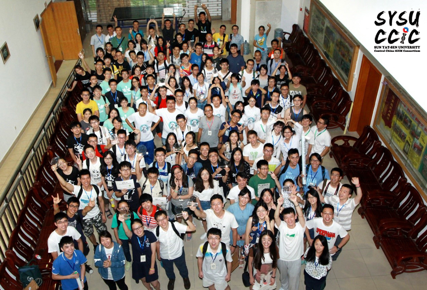
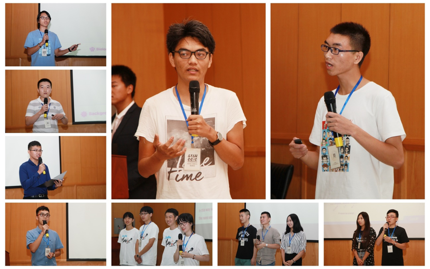
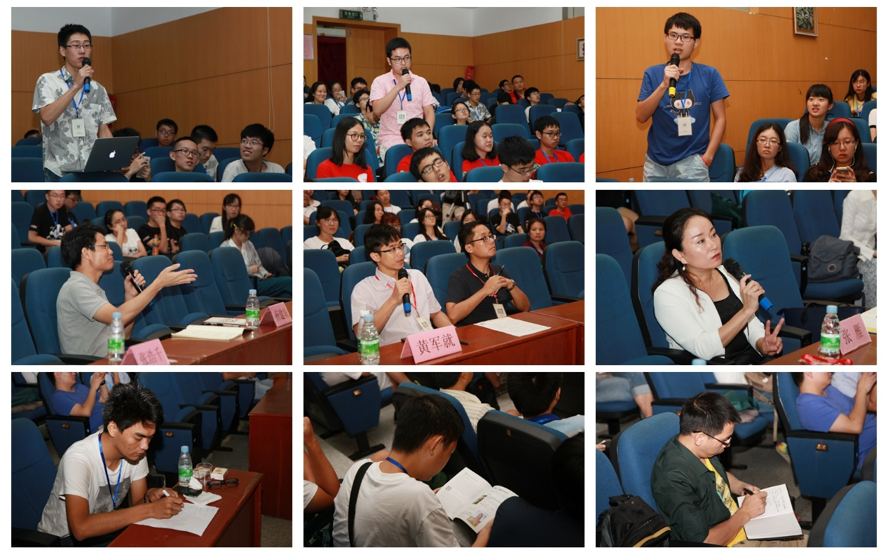
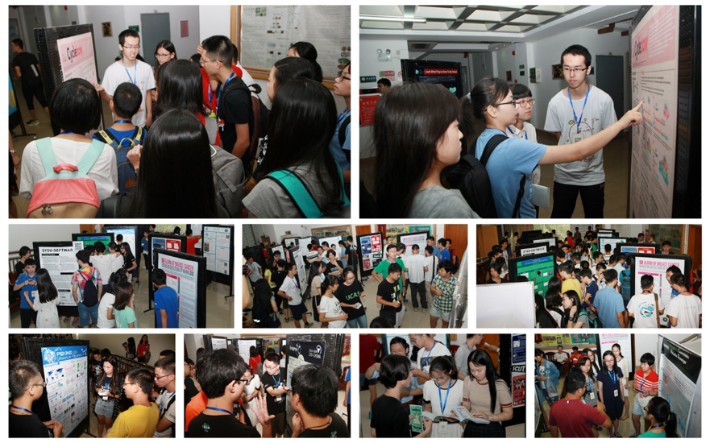
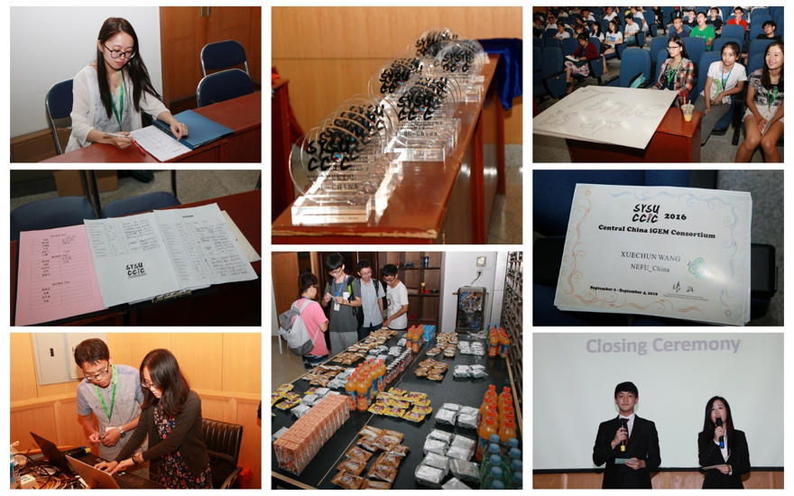

CCiC
(Central China iGEM Consortium)

Figure1. Group photo in the closing ceremony of CCiC.
From September 2rd to 4th, jointly organized by iGEM-SYSU-CHINA and iGEM-SYSU-Software, Sun Yat-sen University Central China iGEM Consortium was solemnly held in Hedanqing Lecture Hall. 28 iGEM teams across the country and professors from School of Life scien ces accounting for a total of 230 people participated in this consortium.

Figure2. Teams tried their best to show their interesting project in the presentation section.
This consortium lasted 3 days, and mimicking the agenda of Great Jamboree, CCIC consisted of the presentation section and poster section. On the evening of September 2rd, all the teams participated in the opening ceremony. Yan Zhang the Vice President of our School and Professor Junjiu Huang made a speech at the beginning of the opening ceremony, which gave us sincerely wishes and strength to stick to our goals. Then 28 iGEM teams around China brought brief introductions respectively, allowing further understanding a mong us. Finally, Senior Haoqian Zhang shared his experiences in iGEM and provided us with precious advices.

Figure3. The audience and professors we invited actively asked questions and took notes.
The presentations began in the morning of September 4th, and in this section, each team should give a presentation of their projects in 20 minutes and left 10 minutes for judging and questioning by professors and the audience. Every team presented their well-prepared project and triggered fierce discussions. During the meeting, everyone enjoyed the time very much. The closing ceremony was held at 4 p.m., September 4th, in which Dr Feng Liu addressed his highly appreciation to this consortium. All the teams received their trophies and souvenirs, we took a united picture drawing the end of this consortium.

Figure 4. iGEMers from all over the country communicated with each other actively in poster section.
During this consortium, every iGEM team members were affected by the enthusiasm and culture of SYSU and got an excellent opportunity to prepare for the Great Jamboree in Boston. More importantly, through presentations and poster communication, teams could conduct their further experiments better. May CCiC continue to hold in China and each team can get satisfying grades in Boston!

Figure 5. Thanks for all volunteers to make CCiC a big success!